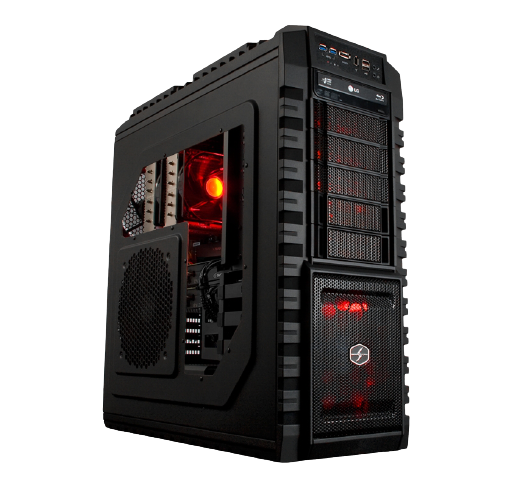
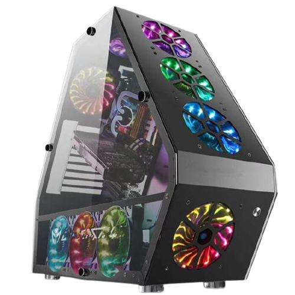

Aprenda agora os tipos de computador
Sabemos que para escolher o Pc certo pode ser complicado, mas você acabou de entrar no lugar certo, e aqui vamos tirar todas as suas dúvidas e você ira sair daqui com total sabedoria de qual computador comprar, lembrando que nós dividimos em 3 tipos de Pc:
Gamer: São os computadores mais voltados para quem tem foco em jogos, lives, e coisas que utilizam muita VRAM

Home/Work: São os computadores usados para fazer trabalhos simples ou usar para navegar na internet, basicamente usar para coisas que não necessitam placa de vídeo dedicada, logo os preços desses computadores são os mais baratos.
E também temos o Pcs customizados, que você escolhe as peças e tudo, e nós já enviamos tudo montado para não te dar dor de cabeça, lembrando aqui que esse modelo é para quem tem um bom conhecimento sobre Hardware.
